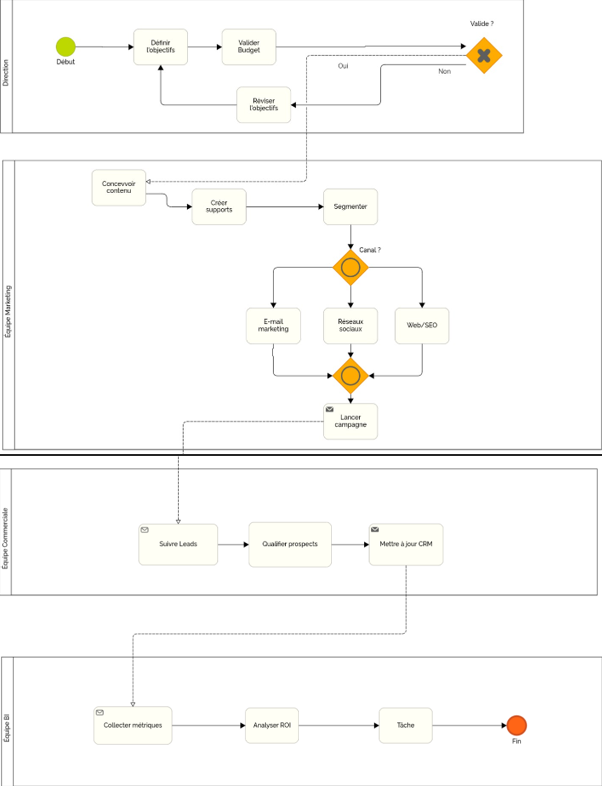
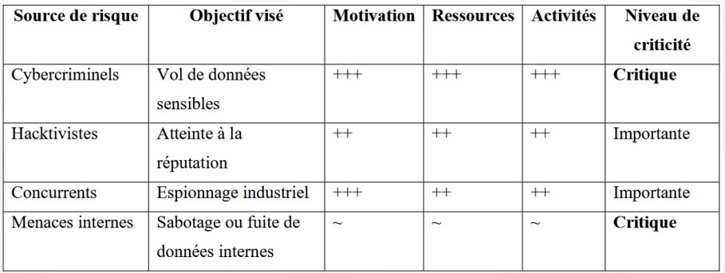
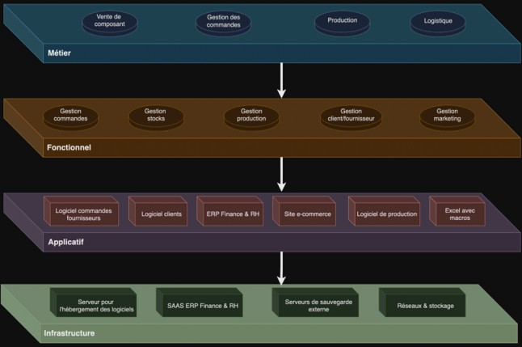

STRATÉGIE SI & CYBERSÉCURITÉ
Architecture Stratégique & Analyse des Risques (K-Electronik)
#ISO_27001 #EBIOS_RM #Urbanisation_SI #BPMN_2.0 #Green_IT #PCA_PRA
> 1. Problématique & Contexte Métier
Dans le cadre de l'acquisition stratégique d'une filiale internationale, la société K-Electronik devait homogénéiser ses systèmes d'information, aligner ses processus métiers sur les standards du groupe et élaborer un cadre de gouvernance et de sécurité (PSSI) conforme aux exigences ISO 27001 et EBIOS RM.
> 2. Livrables Visuels & Schémas Stratégiques
01. MODÉLISATION (BPMN)

Cartographie des interactions métiers et automatisation des flux.
02. ANALYSE (EBIOS RM)

Matrice de criticité, menaces et plan de remédiation cyber.
03. ARCHITECTURE CIBLE

Cartographie de l'urbanisation SI et gouvernance stratégique.
> 3. Gouvernance & Sécurité Déployées
-
Urbanisation du SI : Découpage en 4 couches d'architecture (Métier, Fonctionnelle, Applicative, Technique) facilitant l'interopérabilité des outils groupe.
-
Méthode EBIOS RM & ISO 27005 : Identification des biens supports et essentiels, formalisation des scénarios d'attaque et hiérarchisation des risques résiduels.
-
Politique de Sécurité (PSSI) : Rédaction de directives claires concernant les contrôles d'accès, la gestion des privilèges (RBAC) et la politique de durcissement.
-
Résilience & Continuité d'Activité : Établissement des métriques de reprise (RTO/RPO) et procédures de bascule pour le Plan de Continuité d'Activité (PCA/PRA).
-
Démarche Numérique Responsable (Green IT) : Évaluation de l'empreinte carbone matérielle et préconisations d'éco-conception logicielle (ISO 26000).